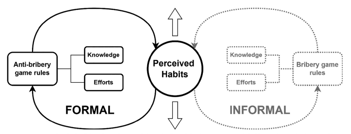

Estadística IV
Estadística multivariada
Antecedentes
Introducción
En investigación social, el uso adecuado de métodos estadísticos para comprender la estructura y operatividad de un fenómeno determinado, constituye una ventaja del investigador en un entorno competitio de alto desempaño. Una gran variedad de procesos de planeación y evaluación de actividades gubernamentales, administrativas, económicas y financieras, se basan en resultados obtenidos mediante el análisis estadístico de los fenómenos en ellos involucrados.
Además, dado el crecimiento exponencial de las fuentes de información y el desarrollo acelerado de las herramientas tecnológicas, es apropiado disponer de una sólida fundamentación conceptual y práctica que le permita transformar y comprender grandes cantidades de información.
Presentación
Descripción del Curso
Estadística IV: Estadística multivariada es un curso avanzado que capacita a los estudiantes en el diseño y evaluación de herramientas de medición en investigaciones sociales. El contenido abarca la conceptualización de constructos formativos y reflexivos, así como la creación de instrumentos como cuestionarios y formularios. Los estudiantes aprenderán a definir, construir y evaluar estos instrumentos, asegurando consistencia, validez y generalización de los resultados. Se abordarán diferentes escalas de medición (binaria, Likert, ordinal y numérica), además de preguntas cerradas y abiertas.
Justificación
Estadística IV: Estadística multivariada es una asignatura fundamental dentro del ciclo formativo en técnicas especiales de investigación, enfocada en fortalecer las competencias de los estudiantes en la creación y validación de instrumentos de medición. Este curso cubre áreas clave como el diseño de cuestionarios, la evaluación de constructos formativos y reflexivos, y la implementación de algoritmos de agrupación y segmentación, esenciales para la investigación social.
Consideraciones
Sobre los contenidos teóricos y/o conceptuales básicos del programa.
Es curso está lleno de contenidos prácticos y ligeros que no exigen a los estudiantes mayores conocimientos o destrezas sobre los temas, ni la realización de tareas o trabajos profundos por fuera del aula. Lo que se busca es impartir conocimiento y entregar herramientas básicas de estadística como apoyo a las investigaciones y documentos exigidos como proyectos de investigación.
Objetivo
Examinar cómo ocurre la recolección de datos en una investigación de tipo cuantitativo.
Metodología
Curso magistral con talleres prácticos en donde se involucren todos los asistentes mediante el desarrollo de un taller y exposición de resultados.
Docente
Julián Cruz
Soy científico de datos, profesional en estadística y magíster en ciencias. Cuento con más de 12 años de experiencia demostrada en analítica y ciencia de datos. Mi perfil contempla desde liderazgo de programas de capacitación y gestión del cambio, hasta ejecución proyectos de base tecnológica. Esta experiencia me ha permitido desarrollar diferentes competencias, como la orientación al valor en toma de decisiones, la conformación y desarrollo de equipos de alto desempeño y la negociación integradora.
Material
Handbook on Constructing Composite Indicators: Methodology and User Guide
Narrativa
Creadores
Los creadores de herramientas, productos, servicios y experiencias deben tener un conocimiento profundo sobre el campo en el que actúan.
Usuarios
Los usuarios de herramientas, productos, servicicios y experiencias deben tener claridad sobre su finalidad y el modo de uso.
Acercamiento epistemológico
Cambio en el paradigma
En este momento se está llevando a cabo un cambio profundo en los enfoques del análisis de datos y la modelización, que reflejan la evolución de la metodología estadística hacia la ciencia de datos.
Paradigma clásico
Se basa en modelos estadísticos tradicionales con supuestos de linealidad y trabaja con conjuntos de datos pequeños. El enfoque está en la inferencia y la explicación basada en muestras limitadas.
Paradigma emergente
Utiliza técnicas de aprendizaje automático e inteligencia artificial para analizar grandes volúmenes de datos. Se enfoca en la eficiencia computacional y en manejar la complejidad de relaciones no lineales, con un fuerte énfasis en la precisión predictiva y en la capacidad de trabajar con datos masivos.
Paradigma clásico
Conjuntos pequeños de datos. Datos caros. Eficiencia = uso de menos datos.
Problema población - muestra. Inferencia estadística. Supuestos distribucionales.
Relaciones lineales.
Explicación = Predicción. Hipótesis y pronóstico.
Paradigma emergente
Conjuntos grandes de datos. Datos baratos. Eficiencia = Eficiencia computacional.
Problema sesgo - varianza. Sobreajuste. Validación cruzada.
Relaciones no lineales.
Explicar o predecir.
Explicaciones complejas.
Pronósticos precisos. Inteligencia artificial.
Ejemplo
Algunos ejemplos del paradigma clásico y del paradigma emergente
Linealidad
PCA
Análisis factorial
SEM
Complejidad
Distancias
t-Sne
Clustering
La medición clásica se sitúa en el paradigma lineal.
Tipo de estudio
De acuerdo a la pregunta el estudio puede ser:
- Descriptivo.
- Predictivo.
- Explicativo.
- Inferencial.
- Correlacional.
- Expermental.
- Longitudinal.
- Exploratorio.
- Confirmatorio.
Epistemología de la ciencia
Un repaso
Positivismo: Enfoque en la observación empírica y datos objetivos.
Verificacionismo: Teorías deben ser verificables empíricamente.
Falsacionismo: Enfoque en la refutación y la prueba de teorías.
Paradigmas Científicos: El conocimiento avanza a través de cambios en los paradigmas científicos.
Metodología
- Planeación.
- Diseño.
- Muestreo.
- Implementación.
- Análisis.
- Socialización.
Intrumentos
Instrumentos
Un instrumento de medida es una técnica o conjunto de técnicas que permitirán una asignación numérica que cuantifique las manifestaciones de un constructo que es medible solo de manera indirecta. (Herrera, 1998)
Cuestionarios
Un cuestionario es un conjunto de preguntas que indagan por aspectos concernientes al constructo.
Las preguntas o ítems tienen un valor particular en la construcción de un cuestionario.
Construcción
La construcción de un cuestionario, es decir, de definición de las preguntas que lleva, no ocurre de manera subjetiva.
Es preferible tomar como base cuestionarios previos o estudios detallados anteriores o partir de una investigación cualitativa anterior.
La pregunta
- Qué se pregunta. Debe estar relacionado con lo que se quiere medir.
- Cada pregunta es atómica. No indaga por diferentes aspectos al mismo tiempo.
Tipos de preguntas
Las preguntas que se realizan pueden ser:
Abiertas
- El usuario responde un párrafo con sus apreciaciones.
- En general no se incluyen por no tener un abordaje desde la estadística clásica.
- Pueden ser analizadas con minería de texto y procesamiento del lenguaje natural.
Cerradas
- Numéricas
- Opción múltiple con única respuesta.
- Opción múltiple con múltiple respuesta (el análisis no es tan fácil).
Estructuras de preguntas
Algunos mecanismos de indagación más compleja.
- Votos múltiples.
- Ranking.
- Likert.
Votos múltiples
Es una estructura de votación, cada integrante del grupo tiene un número de votos con respecto a un conjunto de alternativas. A diferencia de una votación única, donde se selecciona solo una opción, la votación múltiple permite elegir varias opciones, ofreciendo una visión más completa de las preferencias del grupo.
Ejemplo: Imagina que tienes una lista de marcas de automóviles: Tesla, BMW, Mercedes, Audi, Toyota, Ford, Honda, Volvo. Se te pide que votes por las tres marcas que más te gusten.
¿Cómo crees que se analiza?
Ranking
Se solicita a los participantes que organicen de mayor a menor una lista según un criterio definido. Este proceso permite capturar las preferencias relativas entre las diferentes opciones.
Ejemplo: Imagina que tienes una lista de postres: tiramisú, helado de vainilla, cheesecake, brownie, mousse de chocolate, flan, macarrones, crème brûlée. Se te pide que los organices de mayor a menor según lo deliciosos que te parezcan.
¿Cómo crees que se analiza?
Likert
Se solicita a los participantes que puntúen una lista de afirmaciones según una escala definida.
Ejemplo: Imagina que se les pide a los participantes que expresen su nivel de acuerdo con las siguientes afirmaciones sobre ética en el lugar de trabajo:
“Es aceptable que los empleados reporten irregularidades de manera anónima.”
“Las empresas deben ser transparentes sobre sus prácticas ambientales.”
“Es importante que las decisiones corporativas se basen en principios éticos, incluso si afecta la rentabilidad.”
Los participantes deben calificar cada afirmación en una escala que va desde “totalmente en desacuerdo”, “en desacuerdo”, “neutral”, “de acuerdo” hasta “totalmente de acuerdo”.
¿Cómo crees que se analiza?
Buenas prácticas
En los procesos de diseño de instrumentos hay una serie de buenas prácticas:
- No usar filtros en las encuestas.
- Nunca ponerle número a las categorías ni a la no respuesta.
- No hacer preguntas tendenciosas.
- Usar palabras claras.
- No dar alternativas implícitas.
- No hacer suposiciones tácitas.
- No usar dobles negaciones.
- Mejor preguntar la fecha de nacimiento que la edad.
- Preguntar como numéricos los datos numéricos siempre que sea posible.
Medición
Indicadores y métricas
Los indicadores son herramientas cuantitativas utilizadas para medir, monitorear y evaluar un fenómeno o proceso específico. Un indicador generalmente se compone de un numerador y un denominador, lo que permite contextualizar la medición y compararla en diferentes situaciones. Por ejemplo, un indicador común en economía es la tasa de desempleo, que se calcula dividiendo el número de personas desempleadas (numerador) por la población activa total (denominador), y se expresa como un porcentaje.
Las métricas, aunque también son números que sirven para evaluar aspectos de un fenómeno, suelen referirse a medidas directas que no necesariamente requieren un numerador y un denominador. Son herramientas clave en la evaluación del rendimiento y pueden incluir una amplia gama de datos, desde cifras de ventas hasta tiempos de respuesta en un sistema. Por ejemplo, en un sitio web, una métrica común es el tiempo promedio que un usuario pasa en una página.
Puedes medir usando un indicador: ¿pero quieres?
¿Por qué no puedo ver a mi médico la otra semana?
En gran Bretaña, se propuso medir la calidad de la salud con un indicador: que cuando un paciente llamara a su médico, le dieran cita en menos de cuarenta y ocho horas. Spoiler: (no funcionó, sólo se atendían llamadas para atención inmediata y se prohibieron las citas por adelantado).
Aquí las ambulancias no llegan
En gran Bretaña, se propuso medir la calidad de la salud con un indicador: que cuando había una llamada de emergencia desde una zona urbana, y se consideraba que el caso ponía en peligro una vida humana de forma inmediata el servicio de ambulancias tenía ocho minutos para llegar al lugar. Spoiler: no funcionó, las ambulancias sólo iban a lugares cercanos. Cancelaban servicios y reiniciaban rutas..
Constructos
Definición
Un constructo es un aspecto medible relacionado con el fenómeno o sistema que se investiga. Un constructo puede ser unidimensional (linealidad) o multidimensional (complejidad). Generalmente, la medición de un constructo no se puede realizar de manera directa. Este concepto es usado en economía, psicometría, marketing, etc.
Según Gras (1980) un constructo es la representación sobre algún aspecto sobre el objeto que será observado, medido y relacionado con otros constructos.
Tipos de constructos
Constructos formativos
Se miden a partir de sus causas.
- Calidad.
- Estrato.
- Score de crédito.
Constructos reflexivos
Se miden a partir de sus consecuencias.
- Logro académico.
- Riesgo psicosocial.
- Desempeño laboral.
Medición de constructos
La medición de un constructo es una variable latente. Las variables latentes requieren una medición indirecta, que se realiza a partir de variables observables.
Briones (1998) establece que los constructos son medibles a través de sus manifestaciones externas, es decir, sus indicadores. Los constructos pueden ser definidos como propiedad subyacentes medidos solamente en forma indirecta, son definiciones mentales de los eventos de objetos los cuales pueden variar.
Los constructos se miden mediante instrumentos. Los instrumentos pasan por un proceso de validación.
Validación
Validar un instrumento requiere la realización de un proceso de recolección de datos.
Validez
Que el instrumento concuerde con el constructo que dice medir.
- Según algunos, la sección de matemáticas en la prueba Saber 11 depende demasiado de la comprensión de lectura.
Confiabilidad
Al repetir la medición, los resultados se mantienen.
- Según algunos, los resultados de metemáticas de años distintos de la prueba Saber 11, no son comparables entre sí.
Validez de contenido
Los ítems agotan el constructo.
Un cuestionario se evalúa solicitando a un grupo de expertos que puntúen los ítems en varios aspectos. Generalmente, los aspectos a evaluar son:
- Duración: cuánto toma responder el cuestionario.
- Claridad: que la persona logre comprender las preguntas.
- Completitud: que las respuestas agoten las posibles opciones a las preguntas.
- Pertinencia: que las respuestas sean pertinentes.
La concordancia entre expertos se mide utilizando un procedimiento, como el Kappa de Cohen o el Kappa de Fleiss.
Validez convergente y discriminante
Son dos tipos de validez complementarios.
Convergente
Que los ítems que están relacionados con el constructo en la teoría lo estén en la realidad.
Discriminante
Que los ítems que no están relacionados con el constructo en la teoría no lo estén en la realidad.
Consistencia interna
La consistencia interna es la propiedad de los ítems de estár altamente correlacionadas entre sí, lo que indica que están asociadas a un trazo latente. Dado que esta consistencia interna se encuentra reflejada en la estructura de correlación de las variables es posible medirla y analizarla.
Medidas
Algunas de las medidas más usadas para analizar la consistencia entre variables.
Lambda de Guttman.
Inter Item Correlation (Cohen & Swerdlik, 2005).
Consistencia externa
La medición que hacemos es consistente con la obtenida mediante otros instrumentos.
Taller
Taller
Vamos a revisar la validación de un instrumento.
Contexto
Propósito – Este artículo informa sobre el desarrollo y validación de un índice de medición de soborno para el sector empresarial, que, basado en la teoría institucional, busca superar las limitaciones de las mediciones tradicionales, reconociendo las dinámicas que originan el fenómeno e identificando los componentes del proceso.
Diseño/metodología/enfoque – Para la construcción del índice se utilizaron técnicas de análisis correlacional y de componentes principales, así como rigurosas pruebas estadísticas, validando el instrumento en una muestra de 2.963 empresas de América Latina, entre ellas Argentina, Colombia, Chile, Ecuador, Guatemala, México y Perú.
Hallazgos – El resultado fue un instrumento compuesto por dos dimensiones: (1) reglas de juego antisoborno, que incluyen conocimiento normativo y esfuerzo antisoborno, y (2) soborno como hábito percibido, permitiendo una representación objetiva de la realidad debido a su consistencia interna, validez concurrente y discriminante.
Originalidad/Valor – Este artículo pone en evidencia empírica diferentes variables que hacen posible el soborno. Los resultados pueden ser útiles en el diseño de estrategias para prevenir este tipo de comportamiento. También destaca la importancia de diseñar mecanismos para registrar la información relacionada con la lucha contra el soborno.
Implicaciones prácticas – Este instrumento es uno de los pocos que se enfoca en medir el soborno en el sector empresarial en términos de prácticas de corrupción, siendo útil para instituciones tanto públicas como privadas para promover mejores reglas de juego en contra del soborno. Adicionalmente, el modelo teórico propuesto puede ser utilizado para medir otros fenómenos con características similares.
Palabras clave – Soborno, Corrupción, Índice, Empresas latinoamericanas, Teoría institucional
Tipo de paper – Trabajo de investigación
H1. Como componentes de las reglas de juego antisoborno, se espera que la correlación entre el conocimiento de las regulaciones y los esfuerzos antisoborno sea significativamente positiva.
H2. Dado que son indicadores de la institucionalización de fuerzas opuestas, las reglas de juego antisoborno y el soborno como hábito percibido deben tener una correlación negativa.

Papers
Escudriñar el documento.
Tomar nota a cerca de todas las inquietudes que este documento genera.
Intentar responderlas por cuenta propia.
Compartirlas en el documento del grupo.
Responda unas preguntas:
¿Alguna de las dimensiones del índice es inconsistente?
¿Qué dimensión es más consistente?
¿Qué dimensión presenta una mayor redundancia?
¿Cómo se evalúa la consistencia externa?
Tópicos
Reducción de dimensiones
Necesitamos reducir las dimensiones de un conjunto de datos por varias razones:
Visualización: poder observar los datos en 2 o 3 dimensiones.
Resumen: poder resumir indicadores (mediciones directas) en índices (mediciones indirectas).
Modelaje: poder disminuir la cantidad de variables que entran en un modelo.
ACP
El análisis de componentes principales es un método de reducción de dimensiones basado en proyecciones de espacios vectoriales.
Definición matemática
Dado un conjunto de variables \(X\) el procedimiento encuentra coeficientes \(\alpha\) que maximizan la información explicada en su combinación lineal \(Z\), así:
\[Z = X\alpha = \sum_{i=1}^k \alpha_i X_i\]
Significado matemático
Esto significa una rotación en el espacio, cambiando los ejes previos por ejes nuevos.
ACP
Características
- Es lineal: las transformaciones que contempla son lineales.
- Es interpretable: es posible establecer cuál variable es más o menos importante.
- Los ejes son interpretables a posteriori.
Ejemplo
ACP
Evaluación
El procedimiento produce:
Un círculo de correlaciones: Deben estar las flechas apuntando todas en la misma dirección.
Un gráfico de sedimentación: El primer componente debe tener un valor alto y los demás deben ser bajos.
Alpha de Cronbach
Consistencia interna
En los casos donde todas las variables son mediciones indirectas distintas de un mismo aspecto no medible, se hace referencia a la propiedad denominada consistencia interna. La consistencia interna consiste en la propiedad de las variables en estar altamente correlacionadas entre sí, lo que indica que están asociadas a un trazo latente. Dado que esta consistencia interna se encuentra reflejada en a estructura de correlación de las variables es posible medirla y analizarla.
Alpha de Cronbach
El Alfa de Cronbach [@Cronbach1951] es una de las medidas más usadas para analizar la consistencia entre variables.
Dados \(K\) variables \(Y_1, Y_2, ..., Y_K\) y su suma \(X = Y_1 + Y_2 + ... + Y_K\), el Alfa de Chronbach está dado por la expresión
\[\alpha = \frac{K}{K-1} \left(1-\frac{\sum_{i = 1}^K \sigma^2_{Y_i}}{\sigma^2_X}\right)\]
Alfa de Cronbach
El valor mínimo aceptable para el coeficiente alfa de Cronbach es 0,70; por debajo de ese valor la consistencia interna de la escala utilizada es baja. Por su parte, el valor máximo esperado es 0,90; por encima de este valor se considera que hay redundancia o duplicación.
Referencias
Cohen, R. J., Swerdlik, M. E., & Phillips, S. M. (1996). Psychological testing and assessment: An introduction to tests and measurement. Mayfield Publishing Co.